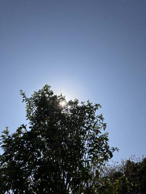
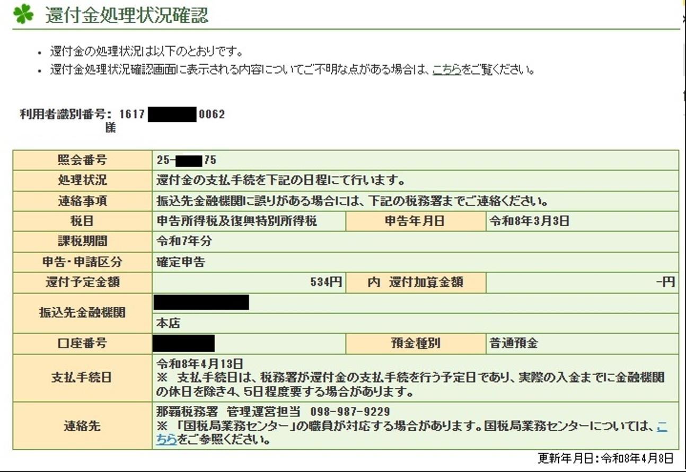

うるがいの話 ある日
最新: 還付金の通知【うるがいの話 ある日】とは 一日だけのプログです
『うるがいの話』の最新一日だけのプログで、通信料が少なく経済的だ。カニの画像をクリックすると全ての日付が載る『うるがいの話』サイトを表示します
|
|
【うるがいの話】 うるがい(ｳﾙｶﾞｲ urugai)とは、『もずくがに』の名前でとても大きくなります。 |
|---|---|
|
|
【カミマヤーの話】 猫のことを方言でマヤーといいます。カミマヤー（kamimayaa）とは、神の猫のことです。 |
|
【たながぁの音楽】 たながぁ（ﾀﾅｶﾞｰ tanagaa）とは手長えびのことで、何種類かあり大きいのは車 エビぐらいになります。 |

|
【ぶながぁの話】 ぶながぁ(ﾌﾞﾅｶﾞｰ bunagaa)とは、赤い髪の毛、赤い身体、そして身長は１ｍ２０ｃｍ ぐらい、川の蟹を食べているの目撃された。場所は沖縄県国頭郡大宜味村のと ある村僕の隣近所に住んでいる爺さんから、聞いた話です。 |
|
|
【ギーマの話】 ギーマ(giima)とは、山原の里山に咲くスズランに似た、 花を付けます。実は食べられます、 気が付くと口の周りが紫になっています。 |
2026年04月09日 (木）還付金の通知
16:09

３月２６日に、メールが届く
（件名）税務署からのお知らせ（＊＊＊＊様）【還付金の処理
状況に関するお知らせ】
（定型文）
＊＊＊＊様
e-Taxをご利用いただきありがとうございます。
ご提出された還付申告の処理状況について、ご連絡します。
詳細については、還付金処理状況をご確認ください。
e-Taxの利用可能時間内に、e-Taxホームページからログインの
上、「マイページ」配下の「還付・納税関係」よりご確認いた
だけます。
でも、確認したが還付金処理状況は無かった。
そして、昨日の夜２２時２１分
【税務署からのお知…」のお知らせが届きました
新しいお知らせが届いています。
マイナポータルにログインして「お知らせ」から確認してくだ
さい。
【送信元】
国税庁
【件名】
【税務署からのお知らせ】還付申告の処理状況更新について
眠る前なのでスルー、そしたら今日の９時４８分にまたメール
がきた。還付金処理状況が確認できた、３月２６日にメールは
障害なのか・・・、マ、たかだか５３４円なので特に騒がず。
でも、詐欺なのかはチェックしました。
